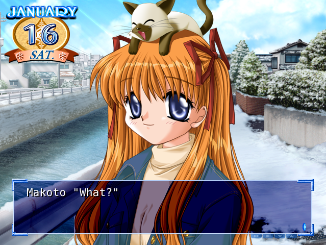
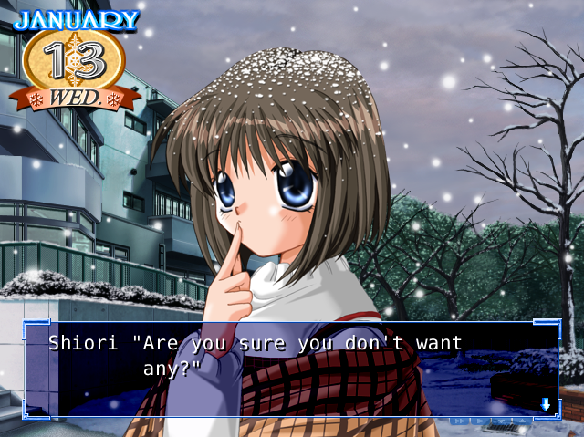
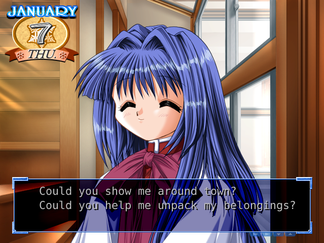
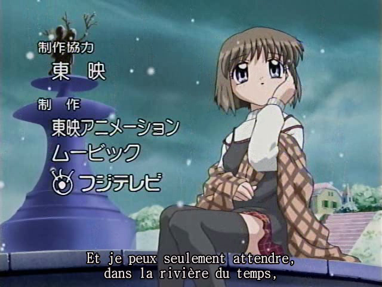
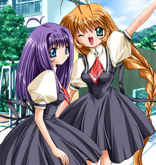
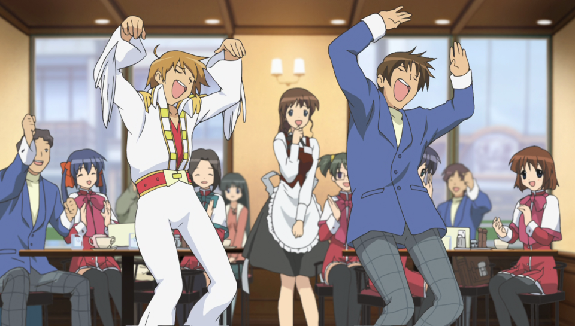

Kanon. Ce nom ne vous dit peut-être rien et c’est tout à fait normal, le visual novel étant un genre inconnu en France, jusqu’à récemment grâce à la portable à deux écrans de Nintendo. Sachez, pourtant, que le titre est considéré comme un classique du genre dans son pays natal et devant son succès retentissant, a eu droit à plusieurs adaptations en manga, animé Japonais ou drama audio. Retour sur une oeuvre des plus poignante…
Kanon n’a jamais été, comme la quasi-totalité de ses confrères, localisé en dehors du Japon.
Le japonais est une langue inaccessible pour la majorité de la planète, mais, fort heureusement l’anglais étant la langue universelle et réunissant quantité de personne à travers le globe, des fans s’occupent sans cesse de traduire dans la langue de Shakespeare une bonne partie des Visual novel ayant un intérêt dramaturgique minimum (Kanon n’échappant pas à ce sort).
Ce qui est beaucoup plus rare, c’est de voir arriver une traduction du jeu dans notre bonne vieille langue, qui est aujourd’hui arrivé à maturité : http://zebdal.free.fr/whitedream/kanon.php.
Au passage, la plupart des versions du jeu n’ont pas connu de doublage et celles sur support PC n’échappent pas à la règle. Cependant, c’était sans compter le travail des fans, mettant au point un patch permettant d’apposer les doublages de la version Dreamcast. Je reviendrai sur ceux-ci un peu plus tard.
Mais commençons par définir à quelle sorte de jeu nous allons jouer, à quelle sorte de Visual novel nous allons livrer nos lectures. Bien qu’il s’agisse d’un jeu où l’on incarne un garçon, lors de la vie quotidienne, qui va invariablement finir avec une des filles au centre de l’intrigue, le jeu n’est pas à considérer comme un dating-sim (alias les fameux jeux de drague japonais). Dans Kanon, le héros ne cherche pas à nouer des relations plus qu’amicales avec les filles qu’il rencontre avant de découvrir les sentiments qu’il éprouve à leur encontre, de plus, un dating-sim possède une gestion poussée des relations et se rapproche davantage d’un jeu vidéo que d’une oeuvre littéraire.
Kanon a pour thème : la romance, le drame, le comique avec une pointe de fantastique.
Il s’agit du premier Nakige à avoir été vraiment populaire (le premier Nakige étant One ~To the Radiant Season~, il a été créée par les mêmes personnes juste avant qu’ils quittent le studio Tactics pour fonder le studio Key). Un Nakige est un visual novel qui a pour but de faire pleurer, pour cela il doit suivre un ensemble de règles que vous pouvez voir ici, je les détails dans le reste de l’article. À titre personnel, je n’ai jamais vu aucune oeuvre de fiction atteindre le degré extrême de pathos et de catharsis présent dans les meilleures routes de Key, si quelqu’un sait où je peux trouver mieux qu’il me le fasse savoir.
Le jeu suit durant un mois, la vie de Yuuichi, un jeune étudiant japonais. A la suite de problèmes familiaux, il n’a d’autres choix que d’héberger chez sa tante, vivant dans une petite bourgade du sud du Japon. C’est un retour aux sources pour le garçon : cette ville, c’est celle où il a vécu toute son enfance. Et pourtant, elle ne lui semble que, tout au plus, vaguement familière. Yuuichi va progressivement être confronté aux personnes, aux souvenirs, aux événements qu’il a laissé dans cette ville semblant constamment enneigé, il y a 7 ans de cela
Image gauche : Ce sont des rêves qui vont aider Yuuichi à retrouver la mémoire
Image droite : Ces autres rêves apparaissent sous forme de lignes de textes descendantes, quelles sont leurs significations ?
Le Visual novel commence le 1er Janvier 1999 (en plein hiver) et se termine le 1er Février de la même année. Son déroulement peut se scinder en deux parties. La première où l’on suit l’arrivée de Yuuichi puis son train-train quotidien, on y rencontre les différents personnages et le joueur détermine progressivement quelle route il va emprunter par ses actions, humour et bonne humeur y prévalent. La seconde, qui à lieu, généralement, lors des dix derniers jours et qui est unique pour chaque personnage, marque une nette séparation avec la première, le tragique y tient une place d’honneur.
Tayaki, Sundae à la fraise, Nikuman… Chaque héroïne a son plat favori. La nourriture tient une place importante dans Kanon
Etant donné que les personnages sont une composante essentielle de Kanon et que son histoire est découpée en autant de parties qu’il y a de personnages principaux. Je vais introduire chacun d’entre eux, dans un paragraphe, ainsi que leur rôle dans la première partie du jeu puis, je parlerai plus en détail de leur scénario, qui se concentre, je le rappelle, dans la seconde partie du jeu, au sein d’un autre paragraphe.
Pour éviter de spoiler, les thématiques propres à chaque personnage ne seront pas abordées et je tacherai de rester dans le flou le plus possible.
Yuuichi Aizawa (nom par défaut)
“It was snowing.
The memory is burried in pure white crystals.
In the white misty town I visited back then.
In the snow which falls even now.
I met a lone girl."
Yuuichi est le protagoniste et le narrateur de Kanon et, d’une certaine façon, il s’agit de vous même.Si je n’ai choisis de faire figurer aucune image de lui c’est pour rester dans l’esprit du jeu : celui-ci n’apparaît que dans quelques illustrations où ses yeux sont camouflés (il dispose, par ailleurs, d’un physique particulièrement quelconque), d’autre part il s’agit du seul personnage qui n’ait pas été doublé (seul exception pour l’édition PSP, qui a eu droit à un doublage exclusif). C’est bien entendu, vous l’aurez reconnue, une manière pour le joueur de mieux s’identifier à lui. Cependant, à contrario d’un jeu vidéo où le but recherché serait le même, le héros est très loin d’être atteint de mutisme, de pensée propre et possède un caractère bien défini. Sa personnalité est résolument neutre, il n’est ni bon, ni mauvais et dès lors qu’il doit faire un choix significatif, c’est au joueur de trancher, il ne manque toutefois pas, de toujours exprimer sa propre vision des choses (même après un choix, permettant de justifier ses actions). Il a toutefois une tendance au sarcasme et une manie de sortir des énormités, tout en gardant son sérieux, qui ne manquent pas de faire mouche sur les personnages les plus naïfs. Dans la seconde partie du jeu, les circonstances font que le joueur peut encore mieux s’identifier à lui, son comportement adoptant celui du plus grand nombre.
La narration empreinte de poésie de Kanon. Vous ne verrez plus jamais la neige tomber qu’avec un regard nostalgique.
La narration portée par le personnage pourrait être définie en deux parties : la première portant sur les pensées du personnage, qui n’apparaissent pas sous forme verbale et la seconde s’attachant à décrire la situation, la scène, en deux mots : l’instant présent (un peu à la manière d’un narrateur externe qui n’aurait aucun point de vue). C’est via cette dernière partie que s’exprime toute la poésie du titre, celle-ci s’évertuant en long, en large et en travers à nous passer toutes le champ lexical de la neige, avec toutes les formes de symbolique possible, de façon à donner au joueur le sentiment qu’il est en train de vivre un moment unique (et ça, c’est fort).
Nayuki Minase
scénario : Naoki Hisaya
“Do you remember my name?"
Nayuki est votre cousine et vous vivez donc sous le même toit qu’elle. En plus d’être votre colocataire, elle est également dans la même classe que vous, on va donc la rencontrer extrêmement fréquemment durant le jeu. De par ce fait, il ne fallait pas que Nayuki soit un des persos les plus banals et elle en est, au final, un des plus attachants et mignons. Nayuki est une personne douce, naïve, imaginative, vivant un peu en retrait de la réalité et rayonnante de bonne humeur. Celle-ci souffre de troubles du sommeil : temps de sommeil anormalement long et grosse fatigue lorsque celui-ci n’est pas respecté, somnambulisme, voir légère narcolepsie, ceux-ci, ne manquant pas de provoquer plus d’une situation comique. De nature somnolente, elle est pourtant loin d’être partisan du moindre effort et est, contre toute attente, chef d’une équipe d’athlétisme féministe.
A moitié endormi, Nayuki vient d’amener sa peluche préféré à prendre le petit déjeuner. Tout est normal.
Le scénario de Nayuki est un peu celui par défaut, si vous en êtes là, c’est que vous n’avez suivi aucun des autres.
Bien qu’il soit celui de moins bonne qualité, il n’en demeure pas moins mignon et attendrissant, pas de quoi vous réveillez la nuit, néanmoins. Nayuki est plutôt le personnage secondaire le plus important du jeu, elle sera là tout le long de celui-ci et il est donc normal que sa trame scénaristique ne soit pas la plus élaboré.
Ayu Tsukimiya
scénario : Naoki Hisaya
”…it’s a promise."
Ayu est le personnage-clé du jeu, il suffit de voir la séquence d’introduction pour vous convaincre que le jeu est centré sur elle. Alors de retour en ville, Ayu vous rentre dedans accidentellement et vous entraîne dans la fuite d’un vendeur de Taiyaki mécontent. Lors de leur deuxième rencontre, Yuuichi se rappellera, qu’effectivement, il a connu une dénommé Ayu par le passé. Les deux amis d’enfance se rencontreront, par la suite, toujours au même endroit comme réuni par les fils du destin. Ayu est un personnage enfantin, toujours enjoué mais susceptible et complexé.
La pauvre Ayu se fait sans cesse taquiner par Yuuichi. “Uguu~ tu es tellement méchant Yuuichi-kun !"
Le scénario d’Ayu n’est autre que la quintessence de Kanon. Sans trop spoiler, celui-ci est tellement bien mis en place et tellement bien tourné qu’il change la condition existentielle d’Ayu et donc, par là même, le contexte dans lequel il prend place. Bien mal en prend le joueur croyant que Kanon n’est qu’un long fleuve tranquille dégoulinant de délicieuse niaiserie enfantine, chacun des rebondissements lui fera littéralement décrocher la mâchoire et l’impact émotionnel croissant, causé par le tragique de la situation, le marquera pour longtemps. Prévoyez un convoyeur de mouchoirs et une ou deux journées pour vous en remettre.

Makoto Sawatari
scénario : Jun Maeda
“Spring will come…
I wish it was always spring."
Makoto est un personnage sortit de nulle part. Alors que vous vous baladiez dans la rue, elle se met à vous attaquer et finit par s’évanouir. Une fois ramenée chez vous, elle n’a d’autres choix que d’y élire domicile : elle a perdu sa mémoire et la seule chose dont elle se souvient est qu’elle vous déteste. Makoto est une véritable peste, irresponsable et un peu égoïste. Elle ne cessera de vous jouer des tours et, n’étant pas scolarisé, passera sa journée à lire des mangas et se goinfrer de friandises, bien sûr le personnage principal ne l’entendra pas de cette oreille. Un personnage extrêmement présent durant la première partie du jeu, quelque soit la route que vous avez choisi de prendre.
La mémoire, les souvenirs, l’amnésie sont des thématiques chères à Kanon
Il est très difficile de prévoir le twist qui se cache derrière le scénario de Makoto avant d’y être confronté. La structure scénaristique utilisée est une recette maintes fois éprouvée mais qui est utilisée ici à la perfection. Loin d’atteindre la maestria du scénario d’Ayu, celui-ci est pourtant rempli de bonne idée et très bien construit. Prévoyez, là aussi, le gros-porteur de mouchoir à portée de main, vous en aurez besoin.

Shiori Misaka
scénario : Naoki Hisaya
“They’re called miracles because they don’t happen."
On passe aux personnages aux apparitions peu fréquentes. Shiori n’apparaît que deux fois, au minimum, durant toute la partie et ce en début de jeu. Si Shiori a l’air d’être une personne timide et peu loquace lors de la première rencontre, on se rend bien vite compte que c’est faux. Shiori est une fille joyeuse (quoiqu’un peu soupe au lait), polie et agréable. Elle dispose, malgré tout, d’une faible condition physique qui l’amène à louper souvent l’école. Durant son scénario, les deux protagonistes se rencontreront en dehors de l’établissement scolaire au moment des repas et sortiront occasionnellement ensemble. S’il n’y avait qu’une seule route qui pourrait qualifier le jeu de dating sim dans l’esprit, c’est bien celle-ci.
On arrive maintenant sur un des moins bons scénarios. Celui de Shiori est… prévisible, c’est le moins que l’on puisse dire. Quasiment aucune surprise pour le joueur donc, je suis sûr que rien qu’en lisant la description du personnage, vous savez déjà à quoi vous attendre. L’esprit Kanonien demeure toujours et donc un minimum de qualité est encore là. Si vous aimez, un minimum, lire la première partie de Kanon alors vous trouverez cette deuxième agréable, mais c’est bien tout.
Comme pour la route de Nayuki, celle-ci est à éviter lors d’une première partie.
Mai Kawasumi
scénario : Jun Maeda
”…I am a demon hunter."
A l’aide du générique de début, les développeurs vous apprennent une chose que vous saurez même si vous ne rencontrez pas du tout le personnage : c’est que Mai est une chasseuse de démons. En effet, comme je l’ai dit plus tôt, Kanon inclut des éléments de fantasy et pas que dans ce scénario-ci. Mai est, comme je l’ai plus ou moins laissé entendre : la seule fille que vous n’êtes pas du tout forcé de rencontrer durant le jeu. Chose intelligente : le fait de la rencontrer et donc de commencer à perdre pied avec la réalité, est mis en avant par un unique choix du joueur particulièrement tordu et peu sensé.
Mai parle peu, tellement peu qu’elle semble porter le fait d’être taciturne en tant que mode de vie, d’apparence asociale, rude, froide, voir primaire et insensible, elle ne demande qu’à être mieux connue par le joueur.
Durant le train-train de son scénario, le joueur passera la journée de cours avec elle et son amie Sayuri (sur lequel je reviendrai) et la nuit avec elle lors de la chasse aux démons.
Le scénario de Mai est le second le plus élaboré du jeu. Je commence par passer sur la partie fantastique, en dépit d’une réalisation jugée suffisante pour vraiment immerger le joueur (par exemple, avec le fait que tous les ennemis sont invisibles ou qu’il n’existe qu’un sprite de Mai en train de combattre), celle-ci est rafraîchissante et se bonifie en fin de jeu où l’on se croirait presque dans un “livre dont vous êtes le héros”. Avec des bonnes idées et un scénario, à première vue solide et qui se laisse suivre, la route de Mai faille, cependant, à donner le flot émotionnel qui aurait dû être présent et laisse le joueur sur une pointe d’amertume. La faute, en partie, à une fin décevante et en demi-teinte : constitué de bons passages émouvants et de mauvais niais, stéréotypés et traînant en longueur, brodés les uns à la suite des autres. Pour ces raisons et malgré le travail accomplit, il ne surclasse pas le scénario de Makoto, particulièrement efficace dans son écriture.
Sayuri Kurata
scénario : Jun Maeda
Sayuri est l’amie de Mai. Tout le contraire de cette dernière : elle est très sociable, extrêmement souriante, extrêmement polie, douée dans les bonnes manières et, pour vous aider encore un peu plus à cerner le personnage, parle d’elle à la troisième personne. C’est un personnage prépondérant au sein du scénario de Mai, tellement important, que les développeurs ont décidé de lui donner une sorte de route bonus et c’est pour cela que je n’ai pas décidé de la mettre en valeur comme un personnage de second ordre. Cette “mini route” ne s’active qu’en effectuant une manipulation très spécifique, vous ne tomberez pas dessus par hasard. Elle met plus en avant le background du personnage, est un bon prolongement au scénar de Mai et est assez agréable à parcourir, seul défaut : elle se déroule beaucoup trop vite, ce qui porte atteinte à sa crédibilité.
Autres personnages
Akiko : Akiko est la mère de Nayuki et par extension, votre tante. Véritable caricature de la mère douce et aimante, toujours souriante, toujours aimable, toujours prévenante. C’est, comme sa fille, un personnage extrêmement présent dans Kanon.
Kaori : Meilleure amie de Nayuki, vous allez la rencontrer plus d’une fois durant le jeu. C’est un personnage hautain, autosuffisant et sarcastique, mais agréable à fréquenter, toutefois. A noter qu’elle a un rôle extrêmement important dans un des scénarios du jeu.
Le jeu compte également deux autres personnages importants que je vous laisse le soin de découvrir…
A cause des standards du genre à l’époque, Kanon n’a pas pu se soustraire au fait d’inclure du contenu érotique. Celui-ci n’est présent que dans la première édition du jeu et, exceptionnellement, dans sa “standard édition”. Toutes les autres éditions, et donc, toutes les éditions consoles, sont tout publiques, donc privées de ces scènes.
Comment ça se passe ? Le dernier choix fait avant la scène vous mènera sur un chemin qui déclenchera la scène ou pas, celui-ci peut-être explicite ou à l’inverse pas du tout (lui demander d’aller chercher un magazine…). Dans les éditions tout publiques, le deuxième choix est donc automatiquement appliqué.
Selon Yuuichi Suzumoto (un scénariste de Key), il est tout à fait possible de jouer au jeu en se passant de ces scènes. Leur utilité varie selon les scénario, quelques exemples : dans celui d’Ayu la scène passe assez bien et met plus en avant la relation des deux protagonistes, dans celui de Nayuki c’est assez limite et n’apporte pas grand chose à l’histoire, a contrario celle de Makoto est très mal implémentée, n’apporte rien et, PIRE, peut mettre mal à l’aise le joueur compte tenu de la situation durant laquelle elle intervient.
Ce n’est pas la peine d’en faire tout un foin, ces scènes sont soft, extrêmement courtes et insignifiante d’un point de vue scénaristique. Elles constituent le strict minimum pour attirer un public friand d’eroge (Visual Novel incluant du contenu érotique), selon Wikipedia le titre se serait même démarqué des autres eroge à l’époque à cause du fait qu’il, je cite, élimine pratiquement totalement la composante érotique pour développer le scénario .
On en arrive maintenant au point noir de Kanon : la qualité scénaristique inégale et trop variable des routes qui le composent.
On a donc : un excellent scénario, un très bon, un très bon mais raté donc tout juste bon, puis deux au mieux agréable à suivre. Il est tout à fait normal que tous ces scénarios ne soient pas aussi élaborés que le principal mais il ne l’est pas d’avoir un tel écart entre le meilleur et le moins bon. Un joueur pourra tout à fait passer à côté du jeu lors de ses premières parties puis décider de ne pas le continuer, compte tenu de l’investissement qu’il demande.
Quand on continue la série on se rend compte que 90% des meilleures routes de Key sont écrites par Jun Maeda (la seule exception étant Ayu dans ce Kanon). En faisant Clannad on se rend aussi compte que la présence de fantastique est un élément totalement indispensable pour qu’une route atteigne le flot émotionnel incroyable qui caractérise les meilleures routes des jeux du studio. On peut très bien le voir dans Kanon avec les routes de Nayuki et de Shiori qui se veulent totalement réalistes (sauf Shiori mais uniquement dans sa résolution pas dans le fait de torturer le personnage). Si vous ne me croyez pas, faites la route de Kotomi dans Clannad et vous verrez ce que c’est de travailler à fond sur un scénario se passant de fantastique : on se heurte à un mur quoi qu’on fasse.

Le nombre de choix proposé est, par contre, faramineux, en comptant toutes les routes, il doit bien en avoir plus d’une centaine de différent. Certains ne différent que de quelques lignes de textes, d’autres rajoutent une scène, enfin les choix plus primordiaux définissent la route que vous allez prendre.
Le joueur est donc très mis à contribution même si ce ne sont jamais que des choix à faire.
Déjà un peu abordé avec la narration, la forme est un élément important de Kanon, nous allons le voir.
Commençons par la réalisation graphique. Si le travail artistique est souvent très réussi aujourd’hui, dans les jeux de ce genre, beaucoup de Visual novel datant de cette époque ont pris un sacré coup de vieux. Kanon est très beau, non seulement c’était vrai il y a 14 ans mais aussi aujourd’hui, il n’a absolument pas vieilli et semble être une oeuvre intemporelle. Les sprites sont particulièrement léchés, il y a eu un gros travail sur les cheveux et les yeux (leur teinte changeant de façon importante selon la lumière ambiante) des personnages. Les décors sont réussis (bien que parfois un peu sobres) et les interfaces du plus bel effet. Seul certaines CG, légèrement raté (mauvaises proportions du visage, par exemple), trahissent l’âge du titre, mais ça reste toujours très regardable.
A gauche une CG réussie, à droite une CG ratée
Enchaînons sur la partie sonore.
Comme je l’ai dit plus tôt, un patch permet de palier au doublage faisant défaut à cette version PC, celui-ci est proposé, la plupart du temps, en combo lorsque vous trouvez un patch de traduction, néanmoins il est bon de le rappeler pour tous ceux qui aimeraient se faire la version originale.
Ce serait dommage de ne pas en profiter car le travail qui a été fait est conséquent : chaque plus petite bribe de dialogue a été doublé (sauf pour le personnage principal) et des dialogues, le jeu en compte énormément. Ceux-ci sont en sus très réussis et toutes les voix sont en accord avec les personnages.
On est également servi côté musique. Les musiques d’ambiance arrivent parfaitement à faire vivre les lieux où elles sont jouées et, à l’exception de la musique du menu principal, on sera amené à les écouter une quantité énorme de fois sans qu’elles ne montrent signe de lassitude. Les musiques accompagnant les temps forts sont sans doute les plus mémorables. Comment oublier les thèmes The Day I Waited for the Wind, Sea of Mist ou Remnants of a Dream ? Mélange sublime de piano, xylophone et de corde lancinante.
Toutes les musiques ont l’avantage de parfaitement accompagner le jeu dans ses moindres travers.
Enfin, poussant le perfectionnisme encore plus loin. Kanon possède aussi des bruitages semblant être holophonique. En effet, si jamais vous portez un casque et que l’on tape à la porte ou que vous entendez des bruits de pas rapide vous aurez l’impression que cela vient de l’extérieur, bluffant.
Image droite : Si vous vous posiez la question, oui, il y a bien un sprite masculin dans le jeu
Il y a cependant un endroit où le jeu a un peu vieilli, c’est techniquement. Le jeu ne tourne que dans une résolution de 800*600 et si vous ne voulez pas perdre en qualité vous devrez donc jouer en mode fenêtré.
Par contre, ceux qui aiment personnaliser les options seront servis, il est possible de modifier la couleur, la forme des cadres, la vitesse d’affichage des textes… Le volume des bruitages, voix et musiques individuellement et, chose sympathique, une option permet de modifier à sa guise le volume de la musique lorsqu’un personnage parle.
Difficile pour moi d’exprimer concrètement la durée de vie du jeu. Sachez tout de même qu’il est très long, avec de grosses pincettes, je dirais qu’il faut de 30 à 40h pour voir le bout de toutes les routes.
N’oubliez pas d’utiliser la touche CTRL lorsque vous recommencerez le jeu. Cette touche, faisant partie des standards du Visual Novel, permet de passer les textes à une vitesse hallucinante tant qu’elle reste enfoncée, très pratique pour écourter les scènes déjà vues.
Une fois le jeu fini, le joueur débloque un sound test, permettant d’écouter les musiques du jeu ainsi que la galerie des CG. Cette dernière dispose d’un système de pourcentage, ce qui encourage le joueur à se refaire les différentes routes pour finir le jeu à 100%.
Conclusion. Sur la forme Kanon est extrêmement réussi, en plus d’être très bien écrit, le travail artistique est impeccable même aujourd’hui, les musiques sont sublimes et accompagnent parfaitement le jeu, enfin, si tant est que vous appliquiez le patch correspondant, le doublage est très réussi et colle parfaitement aux différents personnages.
Sur le fond, même si certaines routes sont décevantes, au vu de la réputation du jeu. Les meilleurs sont très bonnes, voire excellentes et marqueront profondément le joueur en lui lassant un souvenir impérissable et en effectuant une purge complète de ses glandes lacrymales.
Un classique du Visual novel, à vous faire si vous n’êtes pas déjà passé par son petit frère Air.
Développeur : Key
Date de sortie : 1999
Article publié originellement sur Gamekult le 28/07/2013
Bonus : Kanon (Toei Animation, 2002)
Kanon a eu deux adaptations en anime, une en 2002 de 13 épisodes et une en 2006 de 26 épisodes.
Ici nous nous intéressons à la première, animé par Toei Animation il s’agit d’un défi difficile pour cette première adaptation de Key, adapter un aussi long jeu disposant de 5 scénarios différents en un seul anime de 13 épisodes n’est pas une mince affaire.
On doit d’abord parler de ce qui fait mal, c’est-à-dire la qualité d’animation très pauvre de cet anime. Le nez et la bouche des personnages sont collés près de leurs yeux énormes ce qui leur fait d’énormes mentons.
Bonne chose : c’est qu’on s’y habitue assez vite et qu’on n’est pas en permanence en train de se dire que c’est moche.
En dehors de ça la mise en scène n’est pas rudimentaire, il y a beaucoup de plans différents et quelques passages un peu impressionnants comme ceux de l’intro ou la caméra tourne autour d’Ayu et de Makoto.

La structure qu’ils ont choisie pour adapter l’anime est de d’abord mixer toutes les routes ensemble, Yuuichi rencontre et devient ami avec toutes les filles puis on a un épisode consacré à la seconde partie de Mai, un pour la seconde partie de Shiori, un pour Makoto puis deux où sont mixés Ayu, Nayuki et les différents épilogues.
C’est une bonne chose des différentes adaptations de Key c’est qu’elles doivent forcément être différentes des jeux et que ça pose donc constamment des questions d’adaptation.
On a donc droit à pas mal de scènes en plus pour faire fonctionner la nouvelle structure, notamment des scènes où les héroïnes interagissent entre elles, ce qui est agréable à voir.
Autre bonne chose c’est que Yuuichi est maintenant un personnage à part entière et qu’il possède maintenant un doublage. Même si le personnage reste fidèle je lui ai trouvé un peu plus d’humanité que dans la première partie du jeu, par exemple, lui et Ayu se taquinent maintenant mutuellement, ce qui était plus unilatéral dans le jeu.
Mais bon vous imaginez bien que 13 épisodes c’est LARGEMENT insuffisant pour adapter Kanon.
Toutes les héroïnes possèdent ainsi de cruel manque au niveau de leur background (en particulier Mai) et certaines fins sont aussi altérées (spécialement Makoto, ça fait presque peur (EDIT: c’est cependant réparé dans l’OAV)) pour avoir un grand final lors du dernier épisode.
J’ai trouvé ça marrant que l’accent soit porté sur la réunion entre Mai et Sayuri ainsi que Shiori et Kaori à la fin de leur scénario, ce qui n’arrive pas dans le jeu, ça vient peut-être du fait qu’ils voulaient distancier Yuuichi d’elles pour avoir un final amoureux avec Nayuki et Ayu.
Les eyecacthers sont excellents, chaque épisode en dispose de deux, “Kanon” est prononcé par le personnage correspondant avec une intonation reflétant son état d’esprit actuel.
Et justement ce final est une idée particulière.
Ayu et Nayuki sont les deux personnages stars de Kanon, il suffit de voir toutes les représentations où elles sont ensemble à commencer par la jaquette originale. Pour Ayu, ça se justifie parce que l’histoire est principalement centrée sur elle, pour Nayuki, c’est parce qu’elle est avec nous tout le long du jeu, c’est un personnage de support, grâce à elle, les développeurs s’assurent que l’on a un personnage mignon à se mettre sous la dent tout le long du jeu. Mais là où ça pose soucis c’est que si Ayu possède l’un des meilleurs scénario de tout Key, Nayuki en possède le pire (enfin au moins jusqu’à Clannad) et une idée de mix a donc de quoi faire peur.
Mais vous connaissez l’expression “ça ne peut pas être pire ?”, ben elle se vérifie ici puisqu’ils ont réussi à rendre le background de Nayuki meilleur. Durant tout le jeu, Nayuki va voir Yuuichi se rapprocher des autres filles ce qui va la ronger et participer à sa dépression à la fin. En enlevant le scénario de Nayuki, ils auraient pu creuser davantage celui d’Ayu et par exemple la séquence de rêve particulièrement marquante de son scénario. Toutefois, Nayuki permet de très beaux changements dans la fin que j’ai vraiment aimé.
La chose que j’attendais le plus dans cet anime ce sont les combats contre les fantômes du scénario de Mai. Car oui, si les VN sont largement supérieurs aux anime sur le plan de la narration, les VN craignent quand il s’agit de figurer des scènes d’action et les animes sont bien plus adaptés pour ça. Ici, les fantômes ne sont plus invisibles mais ont bien une représentation physique et Mai nous donne droit à quelques chorégraphies de combat du plus bel effet. S’il y a un aspect où l’anime est vraiment supérieur au VN c’est celui-là.
En début de chaque épisode, on voit des flocons de neige tombés dans lesquels il y a des images du précédent épisode et par-dessus il y a la voix d’Ayu. Avec cette voix, les scénaristes ont ajouté les rêves d’Ayu qui étaient symbolisés dans le jeu par des lignes de textes descendantes, cependant Ayu se positionne ici comme un narrateur omniscient qui annonce l’épisode à venir de façon poétique par le biais de ses rêves, ce qui est vraiment une excellente idée.
Enfin, on peut évoquer pas mal d’ajouts qui sont apportés par la mise en scène : le fait de voir certains personnages qui ne possédaient pas de sprites comme Kuze le président du conseil des élèves qui créera autant de problème à Mai ; ce plan ingénieux où l’ombre d’Ayu forme la poupée qu’elle cherche ; cette scène où Yuuichi et Mishio parlent du problème de Makoto pendant que Nayuki participe à son club d’athlétisme ; l’excellente utilisation que Nayuki fait de son réveil grenouille à la fin de l’anime ; ce banc qui prend une importance beaucoup plus symbolique dans l’anime ; ce plan fugitif sur la photo de Makoto collée au portable d’Akiko à la fin de l’anime, etc. Et je pourrais en trouver plein comme ça.
On retrouve également les doublages du VN, je sais que les japonais font ça systématiquement mais c’est quelque chose de vraiment génial et qui devrait se retrouver partout, sauf cas de force majeure. On retrouve également les musiques du jeu ce qui fait plaisir à entendre tellement elles sont bonnes même si l’anime utilise majoritairement de nouvelles musiques qui collent plutôt biens aux situations.
EDIT : Je me suis rendu compte deux mois après que l’anime avait un OAV…
Celui-ci est intitulé Kanon Kazahana et couvre la dernière journée de l’histoire qui se passe en été. On peut y voir une relation amoureuse davantage suggérée entre Mai et Sayuri (avec quelques forts sous-entendus), une Nayuki en paix avec elle-même (Kanon 2002 est vraiment la meilleure itération de son scénario) ou encore une petite scène sympathique entre Ayu et Shiori. Cependant la meilleure chose concerne sûrement la réapparition de Makoto qui dispose alors d’une existence particulière, concept qui sera repris dans l’anime Kanon 2006.
Allez encore d’autres exemples de bons ajouts.
Alors bien sûr les adaptations de jeux de Key seront toujours extrêmement inférieures aux VN.
Et c’est pas parce que vous avez 13, 26, 50 ou 100 épisodes pour le faire (même si c’est toujours mieux d’en avoir pour couvrir un maximum du VN). Le genre Visual novel possède des caractéristiques qui sont uniques et qui permettent au style Nakige d’atteindre le flot émotionnel si puissant qui caractérise Key. Essayez de pleurer durant une heure en continu sur un anime lorsque les épisodes font 20 minutes, c’est physiquement impossible ! Ben oui les scènes dans Key elles font parfois une dizaine de minutes, c’est pas possible dans un anime, on ne peut avoir toute l’insistance qui caractérise les scénarios de Key. Dans un anime, la musique est scriptée et ne peut pas s’exprimer pleinement contrairement à un VN et la musique est un élément émotionnel extrêmement important dans les jeux de Key, ce n’est pas pour rien que Jun Maeda, est à la fois le scénariste ET le compositeur le plus important du studio. Dans un anime, on n’a pas aussi tout le minimalisme présent dans un VN (similaire aux romans) qui fait débloquer notre imaginaire et où permet de s’exprimer toute la litote de Key.
Bref, je pourrais continuer comme ça longtemps mais dites vous bien qu’il est physiquement et totalement impossible pour un anime d’égaler un VN de Key et c’est un problème qui vient du médium. Alors qu’est-ce qui reste aux animes de Key ? À être de bons compléments aux jeux et celui-ci en est un excellent, l’équipe d’animation à mis beaucoup d’efforts pour que ce soit le cas.
L’anime nous gratifie de quelques scènes supplémentaires en groupe.
Donc que dire de cette adaptation ?
Le style graphique est horrible même si on s’y fait très vite. Le nombre d’épisodes est clairement insuffisant. Toutefois il est très intéressant de voir comment l’équipe d’animation a réussi le défi d’adapter un jeu absolument non linéaire dans un anime aussi court. Bien sûr de grosses coupes ont été faites dans les scénarios ce qui est parfois assez frustrant. Et bien sûr comme TOUS les animes, ça restera toujours une adaptation extrêmement inférieure au jeu.
Cependant, ça ne veut pas dire que l’équipe d’animation n’a pas mis tout son cœur à faire l’anime. J’ai adoré retrouver les personnages, situations, musiques etc. dans cet anime. Mais plus que ça l’anime fait des changements très intéressants et de très bons ajouts notamment par le biais de la mise en scène qui en fait un excellent complément au jeu, du moins ça a été le cas pour le fan hardcore que je suis. J’ai aussi beaucoup aimé les changements apportés à la fin. Ça ne remplacera absolument jamais le VN mais j’ai trouvé cet anime très beau et je l’ai beaucoup aimé.
Aujourd’hui, il existe néanmoins l’adaptation de 2006 (voir plus bas), plus sérieuse, fidèle et juste meilleure de façon générale, la version de 2002 paraît brouillonne et kitsch en comparaison. Si vous êtes un fan fou de Key comme moi, faites vous la version de 2002, vous ne le regretterez pas, sinon tenez-vous en juste au visual novel et à l’adaptation de 2006.
Ce deuxième article a été publié originellement le 05/03/2018
Bonus : Kanon (Kyoto Animation, 2006)
Kanon est le seul anime de Key à avoir deux adaptations en anime. Quand on voit la première qui est particulièrement médiocre, on se dit que ce n’est pas un mal. Sorti un an après l’adaptation de Air (et deux ans après le visual novel de Clannad), cette adaptation a été confiée à un autre studio d’animation et dure 24 épisodes.
Déjà, l’opening est particulièrement géniale. Elle utilise la même chanson que l’intro du jeu : Last Regrets. Les mêmes personnages sont associés aux mêmes paroles de la chanson et avec les sous-titres on se rend compte que ça a une vraie signification, à ce titre je trouve ça dommage que leur citation ne soit pas présente alors qu’elles sont présentes et peut-être mieux expliquées dans l’anime mais ça aurait peut-être surchargé l’opening. Autre chose que j’aime, c’est la transition des héroïnes par leurs yeux (ça se voit beaucoup avec Nayuki et Shiori), ce qui fait beaucoup rappeler l’intro de Air. Enfin, le début et la fin de la musique sont éludés comme vous avez pu l’entendre, ça ne me pose pas de problème pour le début mais j’ai trouvé la fin vraiment frustrante (on s’attend juste à avoir la dernière partie en instrumentale avec les putains de lignes descendantes super poétiques de l’intro), après on s’y habitue et l’opening est tellement belle que je lui pardonne.
L’anime est super beau visuellement. Il y a un gros travail sur les effets de lumière (on sent l’apport de la retouche ordinateur que l’anime de 2002 n’avait pas) et les couleurs sont dominées constamment par le blanc et surtout le rouge de l’aube et du crépuscule ce qui donne des plans absolument superbes. Et enfin la mise en scène est complètement ouf, je vais essayer d’illustrer l’article par plusieurs exemples pour que vous voyez ce que ça donne.
Un truc sur lequel on pourrait cracher ce sont les éléments 3D qui apparaissent à certains moments et qui sont très laids (c’est bien la seule chose qui m’a rappelé que je regardais un anime de 2006), après c’est vraiment très anecdotique.
Un plan sublime de l’anime
Première chose que j’ai aimé dans cet anime c’est la première rencontre avec Ayu. Celle-ci traîne Yuuichi jusque dans un café et alors qu’ils discutent pour la première fois, en fond joue le Canon de Pachelbel ! Si vous ne le savez pas, Kanon titre son nom de cette célèbre musique classique, elle est belle et mélancolique ce qui exprime vraiment bien l’esprit du jeu, cependant l’anime nous en dit un peu plus sur sa portée symbolique. Elle se fait entendre 3 fois, à 3 moments importants dans l’anime, durant la seconde fois, Sayuri nous explique ce que la musique évoque pour elle : “Elle répète la même mélodie et les mêmes crescendos petit à petit, paisiblement et admirablement. Ce serait bien si la vie évoluait de cette façon, lentement mais sûrement en paraissant inchangée de jour en jour.”, je ne spoil pas la fin de sa réplique qui a un rapport avec son background.
Plusieurs interprétations sont possibles de cette déclaration :
la musique exprime l’idéal que recherchent les personnages pour leur vie, ce qui est au moins valable pour Sayuri
elle exprime le fonctionnement particulier du visual novel où l’on vit chaque jour durant un mois de façon réaliste. La première partie de tous les scénarios de Key suit parfaitement la logique du Canon de Pachelbel
le motif de répétition est à mettre en relation avec le background d’Ayu qui est le scénario principal de Kanon, c’est sûrement son sens premier
On peut aussi faire un autre constat avec le fait que Kanon, le premier jeu de Key, vienne du nom d’une musique. Déjà il faut savoir que le nom de la compagnie “Key” vient lui-même d’une enseigne d’un magasin de musique que fréquentait Jun Maeda à l’époque. Autre chose c’est que Jun Maeda la figure la plus importante du studio, qui est la seule ayant fondée Key qui soit restée aujourd’hui et qui est son scénariste le plus illustre est aussi son compositeur le plus important.
Si le thème de la musique tourne autant autour de Key c’est que la narration ET la musique sont les deux choses les plus importantes dans les visual novel pour créer l’état émotionnel si important qui caractérise les jeux du studio.
Puisqu’on en ait à parler de la musique, il faut savoir que l’anime utilise majoritairement les musiques originales du visual novel avec quelques nouvelles musiques de temps en temps, ce qui est l’opposé total de l’anime de 2002 et ce qui est énorme.
Le doublage est majoritairement le même que dans le visual novel et l’anime de 2002, à deux exceptions prêtes particulièrement intéressantes. Yuuichi ne possède pas la même voix que le premier anime et Shiori possède une doubleuse différente de ses deux précédentes apparitions. Là où c’est intéressant c’est que ces deux nouveaux doubleurs ont été réutilisés dans l’opus PSP qui a la particularité d’avoir une voix pour Yuuichi contrairement aux autres opus. Si vous vous demandez, on s’habitue vite à la nouvelle voix de Shiori, elle colle bien au personnage.
Une chose qui m’a marqué ce sont les débuts d’épisodes quand ils ne sont pas composés des rêves d’Ayu.
Par exemple, au début de l’épisode 17, Yuuichi est rentré après sa poignante rencontre avec Kaori, déprimé, il s’allonge tout habillé sur son lit et dans le noir, Ayu rentre, elle explique qu’elle veut être auprès de Yuuichi, après avoir montré quelques remontrances, Yuuichi finit par la remercier, le plan se termine alors qu’elle est assise auprès de Yuuichi, balançant ses jambes durant plusieurs secondes.
Beaucoup de scènes sont comme ça, visuelles, subtiles et très belles même si ça se remarque surtout dans les débuts d’épisodes.
Autre chose qui force le respect c’est que les personnages, quand ils ne sont pas en uniforme d’école, changent d’habits tous les jours. Ce qui fait que l’anime leur apporte une garde-robe incroyablement grande, ça se voit surtout sur Shiori qui est rarement en uniforme.
Le truc que je reproche aux jeux en tant que fan, c’est que chaque jeu ne comporte strictement AUCUNE référence aux autres, je suis d’accord qu’il ne devrait pas y en avoir à profusion mais le fait de n’en avoir absolument aucune lorsque chaque jeu fait des dizaines et des dizaines et des dizaines d’heures de narration c’est triste je trouve.
L’anime vient y remédier en plaçant des références à tous les épisodes sortis jusque-là + ceux pour lesquels les membres de Key ont travaillés lorsqu’ils étaient chez Tactics !
On a donc dans l’ordre : une référence à MOON. avec l’affiche du film d’horreur que vont voir Ayu et Yuuichi (au passage la fille en kimono est Kanna de Air dans l’habit de Uraha), une référence à ONE ~To the Radiant Season~ avec la présence en personnage d’arrière-plan de Rumi Nanase dans pas mal d’épisodes, il y a aussi des références à Air avec des bus possédant une publicité pour le jus de fruit très étrange de Misuzu, enfin, pour les fans TRES TRES hardcore de Key, Key-chan, la mascotte totalement oubliée de Key et sa petite soeur Kuu-chan apparaissent en personnage d’arrière-plan lors de l’épisode 17 vers la 13e minute (elle apparaissait déjà dans la cafétéria du visual novel).
Je ne ferai pas de listes des ajouts mineurs, s’il y en a une trentaine pour Kanon 2002, il doit y en avoir une dizaine par épisodes pour Kanon 2006… Mais voilà, en tant que fan, y a des trucs qui m’ont totalement soufflé, tous les trucs en plus dans les derniers épisodes en particuliers sont juste fous.
Petite partie qui parle de Key-chan, si ça vous intéresse :

_Key-chan et Kuu-chan portant les tenues des héroïnes de Air_
Comme je l'ai dit, il s'agit de la mascotte oubliée de Key. Sur tout l'internet, je n'ai trouvé des informations sur elle que sur deux pages dont une en Coréen : [ici](http://www.crunchyroll.com/forumtopic-38271/kanon-trivia) et [là](https://m.blog.naver.com/PostView.nhn?blogId=miyunagi3010&logNo=80115669304&proxyReferer=https%3A%2F%2Fwww.google.fr%2F) (si vous en avez plus je suis preneur), donc c'est vraiment quelque chose de très obscur.
En dehors du VN et de l'anime de Kanon, la seule autre apparition qu'elle fait est dans un doujin game s'appelant Kanossyu 2, il s'agit d'un shmup compétitif avec les personnages de Kanon et de Air. Dedans apparaissent Key-chan et Kuu-chan dans un uniforme de Clannad. Il faut les débloquer pour pouvoir jouer avec elles, cependant on peut clairement voir qu'elles sont déblocables en allant voir dans le manuel du jeu.
À noter que Jun Kitagawa a été conçu à l'origine pour être leur grand frère, on peut très bien imaginer que c'est le cas dans Kanon et qu'il s'agit donc de ses deux frangines qui mangent au self dans la scène où elles apparaissent.
En cherchant dans les archives de Key on peut néanmoins voir que Key-chan était utilisée en tant que [bannière](https://web.archive.org/web/20011212003920im_/http://key.visualarts.gr.jp:80/image/key_bn01.gif) et en tant qu'image d'illustration pour la page d'accueil du site de Key durant leurs premières années d'existences.
Par exemple en mars 2001 : [https://web.archive.org/web/20010301212409/http://key.visualarts.gr.jp:80/](https://web.archive.org/web/20010301212409/http://key.visualarts.gr.jp:80/)
Il est aussi possible de voir une bonne partie des images utilisée dans l'ancienne galerie de Key ici : [https://web.archive.org/web/20041019034056fw_/http://key.visualarts.gr.jp:80/gallary/tobira.htm](https://web.archive.org/web/20041019034056fw_/http://key.visualarts.gr.jp:80/gallary/tobira.htm)
(notez la présence de Jun en tant que vignette)
Ma théorie est qu'ils l'ont peu à peu abandonné Key-chan puisque [les héroïnes de chaque épisode font largement leur job en tant que mascotte pour la compagnie](Key.jpg). Cela explique pourquoi il n'en reste quasiment aucune trace aujourd'hui.

Certains personnages ont subi une évolution importante et positive.
D’abord parlons de Jun Kitagawa, il s’agit du camarade de classe de Yuuichi et aussi du seul personnage masculin à disposer d’un sprite dans le visual novel. De façon totalement normale chaque personnage dispose de plusieurs sprites pour montrer ses différentes émotions, Kitagawa est un personnage tellement effacé et quelconque dans le visual novel qu’il ne dispose que d’un seul sprite pour tout le jeu. Ici le personnage a une vraie personnalité qui est calquée sur celle de Sunohara, personnage important de Clannad ayant sorti deux ans auparavant. Il s’agit donc d’un bouffon looser (le côté connard en moins) qui se prend sans cesse des râteaux par les filles, en particulier Kaori pour lequel il éprouve un amour désespéré. Le personnage n’est toutefois pas dénué d’un bon fond et, comme pour Sunhoara, il lui arrivera souvent de faire preuve d’humanité.
Ensuite, Piro. Dans le visual novel, ce chat n’est présent que sur la route de Makoto et on a tendance à oublier qu’il, s’agit de la première mascotte animale de Key (suivront Potato le chien dans Air puis Botan le sanglier dans Clannad). Dans l’anime, une fois que Makoto l’a récupérée il reste dans la demeure des Minase tout le long de l’anime donc a beaucoup plus tendance à l’associer comme mascotte de Kanon. Celui-ci est extrêmement présent et est TROP MIGNON, faisant un miaulement à chaque fois qu’un personnage lui adresse la parole.
Mais le personnage dont l’évolution est la plus importante est Yuuichi. Dans les 3 premiers jeux, Yuuichi est le protagoniste le moins intéressant, Yukito dans Air est juste incroyable devenant notamment un personnage à part entière à un certain stade du jeu, Tomoya dans Clannad dispose également d’un fort background qui le torture régulièrement. Bon déjà, Yuuichi est très classe physiquement, beaucoup plus que dans le premier anime. Ensuite ce qui change dans l’anime c’est qu’il subit tous les scénarios en même temps (et donc que tous ses souvenirs traumatiques du passé resurgissent), en vivre un seul doit déjà être éprouvant pour quelqu’un et là à plusieurs reprises on voit Yuuichi complètement anéanti par tout ce qu’il a vécu, en proie au doute et à la dépression. Une excellente idée qui ajoute beaucoup de profondeur au personnage, je considère que le Yuuichi de cet anime est le meilleur protagoniste de Key avec Yukito, le personnage aura parcouru un long chemin depuis sa première apparition.
Cette fois-ci la progression choisie est : Makoto, Mai, Shiori, Nayuki puis Ayu. On commence puis on finit donc avec les meilleures routes (Makoto avec juste après Mai ce qui est toujours sympathique puis on finit par Ayu), le finale ne mêle pas vraiment Ayu et Nayuki ce qui était propre à l’anime de 2002.
Ce que j’ai bien aimé avec Makoto c’est la façon dont est représentée son animalité dans l’anime, par le biais de sa petite canine qui dépasse ou par les différentes poses qu’elle prend parfois. On peut voir plusieurs petites scènes où elle développe une amitié avec Ayu et c’est un truc vraiment bien avec cet anime, c’est qu’on voit beaucoup de scènes de groupe et par la fin de l’anime toutes les héroïnes auront interagi entre elles. Autre chose de bien c’est que sa présence plane tout au long de la série, formant une sorte de guide pour le protagoniste.
Makoto est le seul des personnages pour lequel j’aurai versé des larmes lors des 3 itérations de Kanon. Toute une soirée pour le visual novel, une ou deux larmes pour l’anime de 2002 et un peu plus que le précédent anime pour celui de 2006. Cela prouve à quel point la formule créée par Jun Maeda (qu’il réutilisera en la complexifiant par la suite) provoque une forte catharsis chez le joueur/spectateur par l’utilisation massive de pathos.
Ensuite Mai. Les fantômes contre lesquels elle se bat sont invisibles comme dans le visual novel, alors que dans l’anime de 2002, ils étaient représentés 90% du temps par des formes monstrueuses. Alors bien sûr c’est plus fidèle au visual novel mais il ne faut pas oublier que ça a été fait comme ça avant tout parce qu’ils ne pouvaient pas représenter de fantômes ou de combats dans le jeu. L’anime de 2002 ne dénaturait pas le jeu parce que les fantômes pouvaient parfaitement avoir des apparences non diégétiques, c’est-à-dire que leur véritable apparence n’apparaîtrait qu’à nous spectateur et qu’ils restaient invisibles pour les personnages, c’est très courant dans les animes et c’est comme ça que je l’ai vu. Pour compenser ça, les affrontements sont montrés presque comme ceux d’anime shonen nekketsu : lorsqu’un coup est porté, une tonne d’effets visuels va s’échapper du fantôme, lorsque Mai atterrit, un cercle de poussière va se former autour d’elle, capable de se déplacer à une vitesse incroyable, elle est même pourvue d’une force surhumaine par moments, capable de détruire un mur de pierre avec son épée… Ce n’est absolument pas réaliste et c’est profondément génial !
Mai possède même ici une intuition hors du commun qui vient de ses aptitudes surnaturelles. Elle se manifeste la première fois que Makoto vient lui faire peur à elle et Yuuichi en se déguisant en fantôme, Mai verra tout de suite que quelque chose cloche avec Makoto et elle fera plusieurs autres réflexions pour d’autres héroïnes comme Ayu. Vous l’aurez reconnu cette scène avec Makoto en fantôme vient tout droit de l’anime de 2002 ! L’anime de 2006 est tellement bon qu’il respecte non seulement le visual novel avec une méticulosité incroyable tout en ajoutant et en corrigeant une tonne de choses mais en plus il se prend la peine de reprendre les bonnes idées instaurées par l’anime de 2002 en les développant. Dans l’anime de 2002, on pouvait voir implicitement que Mai possédait déjà cette intuition qui la caractérisait mais celle-ci était loin d’être aussi développée. Une autre bonne idée reprise est le fait de commencer une bonne partie des épisodes par les rêves d’Ayu.
Sur le visual novel, j’avais trouvé que le final de Mai était raté, tout simplement parce que c’était niais et que la façon de la rattacher au passé de Yuuichi était trop facile. Je n’ai pas trouvé ça trop facile ici, je pense que ça vient beaucoup du plan avec Mai petite jouant à chat qu’on voit à chaque fois dans l’opening en début d’épisode mais ça peut aussi venir du fait que je connaissais parfaitement son scénario avant de voir l’anime. Je n’ai pas non plus trouvé ça niais, pas du tout même, soit parce que c’est mieux présenté que dans le visual novel soit parce que j’ai changé entre-temps (j’ai fait le VN il y a 5 ans). Petite déception à ce niveau, l’espèce de scène avec la projection de Yuuichi dans le futur n’est pas présente, c’était clairement la scène que j’avais préféré à la fin, cependant ça a sûrement été fait parce que Yuuichi ne peut pas finir en couple avec Mai à la fin.
Et excellente nouvelle, c’est que le mini-scénario de Sayuri est présent dans l’anime ET qu’il possède de nettes améliorations par rapport au jeu. Premier problème de son scénario dans le jeu, c’est que les développeurs l’ont foutu où ils pouvaient, c’est-à-dire qu’il y a lieu lorsque Yuuichi et Sayuri vont à l’école, elle se met à déblatérer TOUT son passé, comme ça d’un seul bloc et pour quasiment aucune raison, c’est totalement invraisemblable. Dans l’anime, elle se met à parler d’elle alors que les deux personnages sont posés dans un café et c’est justifié par le fait qu’elle lie son background avec la relation qu’elle entretient avec Mai. Autre problème du jeu, c’est que son scénario est composé en tout et pour tout de 3 CG, imaginez avoir une image pendant 5 minutes avec du texte par-dessus, ce style minimaliste n’est pas celui de Key. Ici, son scénario est ultra-illustré avec beaucoup de plans donc il n’y a pas ce problème.
Lorsqu’elle termine son récit, on revient au présent et on voit un très court plan qui ajoute un degré supplémentaire de pathos au personnage. Toutefois sa présence peut-être controversé car c’est quelque chose de redondant par rapport à ce qui se passe après donc il peut y avoir un phénomène d’atténuation qui peut affecter les autres scénario.
Juste après Sayuri explique son interprétation du Canon de Pachelbel avec la musique qui joue en fond comme je l’expliquais plus tôt. Donc au final, toute cette partie centrée sur Sayuri est vraiment un grand moment de l’anime.
Ensuite nous avons donc Shiori. Ce qui a été surtout fait dans l’anime c’est approfondir sa relation compliquée avec Kaori qui apparaît comme bien plus torturée, c’est l’une des bonnes choses de son scénario du visual novel donc c’était une bonne idée. La petite chose que j’ai à reprocher c’est la thématique du miracle qui n’apparaît pas aussi clairement que dans le visual novel parce que la fin n’apparaît pas dans l’anime. Il y a un détail très intéressant néanmoins c’est l’une de ses déclarations durant la scène finale de la fontaine qui résonne avec les dernières paroles de l’opening. Cette façon qu’à Shiori de gérer sa vie pour moi se retrouve constamment dans son attitude que j’ai toujours trouvé très artificielle (mais peut-être ce n’est qu’un ressenti personnel). On verra d’ailleurs à quel point c’était dur pour le personnage lors de ses retrouvailles déchirantes avec Yuuichi en fin d’anime. En rétrospective, je trouve que c’est un personnage qui disposait quand même d’un bon scénario.
Ensuite nous avons Nayuki. Une bonne chose qui est reprise de l’anime de 2002, c’est cette tristesse extrêmement subtile qui se manifeste chez le personnage lorsque Yuuichi la délaisse parfois pour fréquenter d’autres filles et qui participe à sa dépression finale. Une bonne scène ajoutée pour l’occasion est celle où elle participe à une compétition sportive, ce qui permet de montrer ses capacités athlétiques hors du commun. Une petite complexité supplémentaire est ajoutée par un objet qui la lie avec Yuuichi et ayant un rapport avec les lapins de neige. Comme dans l’anime de 2002, son passé est un peu liée avec celui d’Ayu ce qui est un plus. Après, Nayuki possède l’un des pires scénarios de Key et l’anime a beau faire ce qu’il peut ça ne le sauve pas vraiment, la meilleure itération de son scénario reste dans l’anime de 2002.
Reste la petite Ayu. Les derniers épisodes sont vraiment beaux, que ce soit pour Ayu ET Yuuichi, on y a droit à une rencontre spéciale hallucinante que je vous laisse le soin de découvrir, ce que j’ai vraiment aimé aussi est le dernier épisode où il y a toute une partie qui se passe juste avant la fin de Kanon, celle-ci est vraiment couillue et sublime, fallait le faire franchement.
Là où je fais un constat assez triste c’est que les animes ne m’auront fait verser aucune larme pour ce scénario. Ça peut venir du traitement particulier de l’anime par rapport au VN mais je pense plutôt que ça vient du fait que le scénario d’Ayu fonctionne par révélations, comme j’ai pu l’expliquer, le scénario est vraiment bien écrit car il change plusieurs fois l’état existentiel d’Ayu et c’est justement ces état, chaque fois de pire en pire et provoquant leur propre pathos qui rende le scénario si bouleversant. Cependant, quand on a déjà fait le scénario d’Ayu, ben on connaît la vérité et ça n’a plus aucun effet sur nous, alors que le scénario de Makoto, fonctionne à chaque fois qu’on y a affaire. Donc je recommanderai d’autant plus de faire Kanon en visual novel avant l’anime pour bien profiter de son scénario.
Après personnellement, ça n’empêche pas qu’Ayu reste un souvenir incroyable pour moi et que j’ai vraiment aimé ce que l’anime lui a apportée en la faisant resplendir une nouvelle fois.
Peut-être que je pense ça parce que je suis fan mais Kanon 2006 est l’une des meilleures adaptations que j’ai pu voir et j’hésite vraiment à dire que c’est la meilleure.
Un fan n’aurait sérieusement pas fait mieux, ce n’est pas seulement que c’est d’une fidélité incroyable au visual novel, c’est aussi que l’anime arrive parfaitement à adapter l’histoire au format anime, qu’il fait plein de clins d’oeil aux autres productions de Key mais aussi qu’il ajoute ÉNORMÉMENT de choses que ce soit sur le plan du scénario que de la mise en scène.
À ce stade, Kanon 2006 dépasse le stade de complément pour devenir une partie exclusive de ce qui forme l’ADN de Kanon, donc je le recommande de façon indispensable à tous ceux qui ont aimé le visual novel.
Toutefois, attention Kanon 2006 ne remplace pas le visual novel car un jeu Key perd son intensité émotionnelle incroyable lorsqu’il est adapté en anime même lorsqu’il s’agit d’une adaptation incroyablement belle et parfaite comme celle auquel nous avons affaire ici. Donc soyez sûr de faire le visual novel avant !
Ce troisième article a été publié originellement le 24/03/2018
Bonus : Kanon (Dengeki Comics, 2000-2002)
À l’image des animes, Kanon a été adapté deux fois en manga. Le premier manga est sortie un peu près un an après le visual novel et est illustré et scénarisé par l’artiste Petit Morishima.
Le plus gros point fort de cette adaptation c’est qu’elle est extrêmement drôle. L’artiste utilise vraiment bien le style manga pour caricaturer les personnages et faire plein de gags visuels. Dans certains chapitres qui n’ont pas beaucoup de pages, l’artiste rajoute des 4-komas en fin de chapitre qui sont très drôle. Le style fonctionne également bien pour illustrer les scènes plus poignantes avec des dessins assez grands. Sinon c’est pas le plus beau manga qu’on est pu voir mais c’est très correct dans l’ensemble.
Le manga contient un chapitre pour chacune des filles, à l’exception de Nayuki. Je considère encore aujourd’hui que Nayuki est le pire scénario de Key que j’ai pu voir donc c’est pas une grosse perte. Pour compenser cela, Nayuki apparaît aux côtés de Yuuichi dans toutes les histoires, un peu à la manière de Nagisa dans l’anime de CLANNAD. Nayuki fait plutôt du bon job, surtout dans le scénario de Shiori où elle a l’occasion d’aider son amie Kaori.
Le premier chapitre porte justement sur Shiori. J’ai beaucoup aimé cette adaptation de son scénario parce que son problème est montré comme plus pénible (c’est mon principal problème avec sa route), parce que le manga compte certaines scènes chocs exclusives et pour l’implication de Nayuki dont j’ai déjà parlé. Cependant, le gros problème de ce manga est que la seule histoire qu’il adapte dans son intégralité est celle d’Ayu. Le scénario de Shiori ne résout donc pas tout ce qui peut être assez choquant quand on y pense avec du recul.
Le scénario de Makoto est celui qui en souffre le plus avec ses maigres 52 pages. Le seul problème qui est abordé dans ce scénario est sa relation conflictuelle avec Yuuichi et c’est totalement stupide puisqu’il y a plein de foreshadowings qui sont montrés sans qu’ils ne soient jamais expliqués. À la fin, Makoto reste vivre chez les Minase et on ne sait même pas qui elle est vraiment ni pourquoi elle détestait Yuuichi. Le seul bon point est qu’il s’agit de l’adaptation où Piro est le plus mignon avec l’anime de 2006.
Le scénario de Mai est déjà un peu plus intéressant. Il s’attarde sur son problème avec le conseil des élèves, on a la scène du bal et la scène finale qui est exclusive au manga est sympathique. Son problème avec les fantômes n’est ni résolu, ni développé même s’il y a quelques indices très implicites sur leur nature. À noter que ces fins prématurées de scénario permettent d’avoir des scènes où tous les personnages sont présents comme pour la scène de bal, ce qui est très agréable.
Enfin, je n’ai pas grand-chose à dire sur le chapitre d'Ayu mise à part que c’est la meilleure partie du manga. Ça reprend globalement ce qui se passe dans le VN en plus rushé et avec de très beaux dessins, ça peut être assez poignant si vous avez déjà fait le VN.
Ce manga est vraiment à lire pour les fans tant il est drôle, le style manga permettant à l’artiste de faire une tonne de gags visuels qui n’auraient pas aussi bien marchés dans d’autres médias. Il possède aussi certaines particularités intéressantes comme le scénario de Shiori ou le fait qu’on retrouve tous les personnages l’espace de quelques scènes. Certains passages restes assez émouvants comme dans le scénario d’Ayu.
Il est par contre totalement à déconseiller pour les néophytes car il n’adapte correctement que l’histoire d’Ayu, les autres histoires ne sont pas terminées, elles se finissent avant qu’on puisse entrer dans leurs parties les plus intéressantes et possèdent tout un tas de bizarreries scénaristiques à cause de ça.
Ce quatrième article a été publié originellement le 20/02/2019
Bonus : Kanon Honto no Omoi wa Egao no Mukōgawa ni (Fujimi Shobo, 2006-2007)
Il s’agit de la seconde adaptation de Kanon en manga. Celle-ci s’appelle “Honto no Omoi wa Egao no Mukōgawa ni” qui peut se traduire par “The Real Feelings of the Other Side of the Smiling Face”, une thématique plutôt bien développée par le manga. Il possède aussi le sous-titre “each regret of Kanon”, ce qui est assez bien trouvé.
Le manga a été illustré par l’artiste Kinusa Shimotsuki et a été publié du 29 juin 2006 au 20 octobre 2007 dans le magazine Dragon Age Pure puis a été publié dans un manga en deux volumes par l’éditeur Fujimi Shobo.
Le premier volume de ce manga est entièrement consacré à Nayuki, elle dispose de deux chapitres pour son histoire puis de 3 chapitres bonus avec tous les personnages et où sa romance avec Yuuichi est développée. Le second volume comporte un chapitre pour chaque personnage avec un chapitre un peu plus long pour Ayu.
Les 3 chapitres bonus sont très sympas puisqu’ils comportent des histoires exclusives à ce manga. Vous pourrez trouver parfois des scans avec 4 chapitres bonus tout simplement parce que le petit épilogue de Nayuki est considéré comme un chapitre à part dans le manga. Le dernier chapitre bonus qui est un teasing pour l’histoire d’Ayu n’est pas trouvable partout donc faites attention où vous lisez le manga (mangarock est très bien pour ça).
La grosse originalité de ce manga c’est que les histoires sont racontées du point de vue de chaque héroïne, Yuuichi n’en est jamais le protagoniste et on a accès aux pensées des héroïnes.
Seconde originalité, c’est qu’il n’y a pas de continuité entre les différentes histoires et qu’on a toujours leur fin. Et là j’ai envie de dire alléluia, au moins une adaptation qui aura compris qu’on n’adapte pas des routes de VN en les collant les unes à la suite des autres.
Le style est très différent du premier manga, il est beaucoup moins drôle (même s’il y a quelques passages comiques) et il privilégie les grands dessins détaillés aux petits dessins caricaturaux.
Le scénario de Nayuki est l’un des points forts du manga. J’ai trouvé que le fait que l’histoire soit narrée de son côté était très intéressant, que l’ambiance de son histoire est très déprimante contrairement à d’habitude ce qui n’est vraiment pas plus mal et que la construction de Yuuichi et Nayuki en miroir était vraiment très appréciable (je me demande vraiment si c’était l’intention d’Hisaya dans le VN).
L’ordre des événements est différent de d’habitude et certains points sont approfondis. Le manga approfondi sa relation conflictuelle avec Yuuichi puis son gros problème arrive et à la fin, étant donné qu’on est de son côté, on comprend pourquoi elle évolue, son petit épilogue est vraiment très sympa également. Donc l’histoire améliore certaines choses par rapport au VN ce qui est vraiment bien.
À partir du second volume, les histoires deviennent plus courtes, j’ai même l’impression qu’elles le sont encore plus que dans le premier manga.
Celle de Makoto utilise bien le changement de point de vue et l’accent sur la romance, elle fonctionne bien comme dans le VN original.
Le chapitre de Mai est très court et porte uniquement sur sa relation conflictuelle avec Sayuri (pas de trucs surnaturels ou de problèmes avec le conseil des élèves). C’est aussi nul que le scénario de Makoto du premier manga, il n’y a pas de problème de scénario cette fois-ci mais je trouve ça très artificiel.
Le scénario de Shiori est moins intéressant que celui du premier manga mais est sympa quand même. J’ai beaucoup aimé la place que prend Ayu dedans et la fin de l’histoire.
L’histoire d’Ayu est très bien, un plus grand nombre de pages ont été prévus pour traiter son histoire. J’ai vraiment aimé le fait qu’on soit du côté d’Ayu avec quelques passages d’introspection franchement sympa. Au passage, je remercie les traducteurs pour ce qu’ils ont fait mais ils auraient vraiment pu s’abstenir de mettre des notes de traductions à la con durant les moments importants de ce chapitre final.
Ce second manga n’a pas l’humour du premier mais il a ses propres points forts : le fait qu’il soit narré par les héroïnes et qu’aucune histoire ne soit connectée avec les autres (ce qui permet d’avoir l’intégralité des histoires).
Si l’histoire de Nayuki était totalement absente du premier manga c’est elle qui prend la plus grande place dans ce manga (avec celle d’Ayu) en améliorant certains points du VN ce qui fait vraiment plaisir. Les autres histoires sont bien pour la plupart, elles profitent de la forme du manga et possèdent quelques bonnes idées par-ci par-là. Les chapitres bonus sont aussi très agréables en tant que fan service.
Je ne conseillerais peut-être pas ce manga pour les nouveaux venus, les histoires sont assez rushée et peuvent peut-être paraître un peu bizarre pour une première lecture (et puis le VN est 100 fois mieux) mais ça peut valoir le coup si vous êtes fan.
Ce cinquième article a été publié originellement le 04/03/2019
Bonus : Kanon Another Story WonderThree (KIJIMA Renga, 2004-2016)
Le pitch de base de Kanon WonderThree est que se serait-il passé si Yuuichi se souvenait des événements s’étant déroulés 7 années auparavant au moment de revenir dans la ville où il avait grandi ? D’emblée WonderThree s’annonce comme étant une relecture de l’histoire originale qui est au final très, très particulière.
Déjà, je dois dire que WonderThree ne dispose que d’une traduction partielle (2 tomes sur 3 de traduit) ce qui vient certainement du fait que l’espace de temps entre la parution des tomes 1 et 3 est de 12 ans…
Autre chose à savoir c’est que vous ne trouverez pas WonderThree sur les sites de streaming de mangas classiques cela venant certainement du fait qu’il comporte des chapitres avec des nombres impressionnant de pages (parfois presque 90…), on peut néanmoins le trouver en cherchant un tout petit peu.
…Mais en fait le fait qu’il y ait beaucoup de pages dans certains chapitres, on s’en fiche totalement. Le premier chapitre comporte 80 pages par exemple mais comporte très, très peu de textes du coup on le finit très vite. Ce premier chapitre est une sorte de trip artistique très plaisant à lire, les autres chapitres seront en général plus verbeux mais le parti pris du manga sera toujours de donner plus d’importance aux images qu’au texte ce qui est loin d’être désagréable.
Le style de dessin est assez abstrait et très émo pour les personnages, plusieurs d’entre eux étant méconnaissables, mais cela ne s’arrête pas qu’au physique puisque leur attitude change également beaucoup, certains personnages comme Yuuichi, Nayuki ou Kaori sont bien plus cyniques, froids et vaniteux.
Ce ton très déprimant et froid que possède le manga pose problème dès lors que l’auteur essaye d’introduire de l’humour, cela crée une distanciation qui fait que l’on n’y croit pas, je crois que le pire c’est quand l’auteur se dit qu’il vaudrait mieux que ses lecteurs ne finissent pas sous prozac et qu’il se force à faire des chutes humoristiques pour finir certains de ses chapitres, on frise le ridicule.
La première partie du manga se concentre sur Ayu et Nayuki, j’ai trouvé le premier chapitre vraiment bon comme j’ai pu le dire mais j’ai moins été séduit par le reste. La seconde partie se concentre sur Shiori et Kaori et j’ai trouvé ça très bon, c’était une très bonne idée de traiter l’histoire sous un angle différent et le chapitre d’une dizaine de pages finissant l’histoire m’a bien fait rire. Le dernier chapitre qui est le plus long se concentre sur Mai et… Vous savez WonderThree est un manga très étrange à lire à cause de ses personnages et de son ambiance radicalement différent ou de son humour casse-gueule mais même comme ça le reste du manga ne m’avait pas préparé au viol mental que le combat du chapitre 8 est, il faut le lire pour le croire…
WonderThree est très, très loin d’être parfait, je dirais qu’il a à peu près autant de bons points que de mauvais mais ce qui fait plaisir c’est qu’il soit aussi particulier. J’ai vu et lu quasiment toutes les adaptations de Key et ça fait du bien de trouver quelque chose d’aussi singulier dans cet océan de fictions ultra conformistes. Donc oui je recommande de lire WonderThree, je ne sais pas si vous allez trouver ça bien ou pas mais c’est définitivement quelque chose à lire.
Ce sixième article a été publié originellement le 15/09/2020
Bonus: Kounin Anthology Drama CD Kanon Minase-san Chi
Kanon a eu 3 sortes de drama CDs. Les deux premiers se concentrent sur les personnages, chacun d’eux ayant sont CD attitré. La 3e sorte de drama CD appelé Minase-san Chi (ou la maitresse de maison Minase) pourrait porter à croire qu’elle se concentre sur Akiko mais en fait non puisque, même si elle fait une apparition dans presque toutes les histoires, celles-ci se concentre en fait sur tous les personnages et c’est là que ça devient intéressant puisque c’est l’occasion de voir tous les personnages interagir entre eux et d’avoir des side stories originales.
Minase-san Chi a eu droit a une traduction partielle en anglais (quasiment 3 CDs sur les 5 ont été traduits ce qui représente quand même 2h30 de contenu !!). Celle-ci est particulièrement dure à trouver étant donné que les liens sur le site de l’équipe sont mort et que l’équipe de trad n’a posté qu’une de leur vidéo sur YouTube.
Heureusement quelqu’un les a upploadé sur niconico et il est donc possible de toutes les trouver ici : https://www.nicovideo.jp/user/5426771/mylist/10939362?sortKey=addedAt&sortOrder;=asc
L’équipe de traduction a fait un boulot absolument colossal sur l’illustration de leur vidéos. Tout est présenté comme le VN avec les sprites, backgrounds du jeu et une textbox pour afficher le texte. Mais là où ça va beaucoup plus loin que ça c’est qu’ils ont créer de nouveaux sprites (comme celui de Kuze particulièrement réussi), retoucher des sprites existants pour coller à ce qu’il se passe dans les histoires, retoucher les backgrounds (pour par exemple passer les backgrounds CGs de l’été à l’hiver) et à partir du second CD ils ont également ajouté des animations pour les bouches des personnages ce qui est vraiment bien fait. Bref, gros travail artistique de fait et je vous recommande d’aller consulter leur site où ils explique tout ce qu’ils ont fait, c’est assez impressionnant : https://sites.google.com/site/otlfansubs/
En général, les side stories suivent un peu toujours la même logique, elles racontent une nouvelle histoire sur un personnage qui tournent autour de ses thématiques et se termine par un petit drame où le personnage se développe. Ici, ça n’est pas vraiment le cas, la plupart des histoires sont plutôt juste fun à lire et c’est 2 heures de bonheur qu’on passe avec tout le casting loin des drames de l’opus original. On voit tous les personnages interagir entre eux (on se rappelle à quel point les héroïnes étaient isolées dans l’opus original) ce qui veut dire qu’on va pouvoir voir Shiori et Kaori s’entendre bien ce qui est assez génial. Certain personnages annexes sont développés comme Kuze, Kitagawa et Amano, celle-ci va vous surprendre tellement elle est différente loin de ses préoccupations de Kanon. Je dois aussi souligner à quel point les personnages sont fidèles à ceux d’origine puisqu’ils ont été écrits par les scénaristes d’origine, c’est la seule œuvre dont j’ai parlé sur cette page pour laquelle on sent vraiment que c’est un prolongement du VN.
Ces drama CDs sont ce que j’encourage le plus à checker avec Kanon ‘06 après le VN. On passe deux heures de fun avec les personnages du VN et le boulot fait par l’équipe de trad pour illustrer leur vidéos est juste impressionnant, plutôt que d’écouter un drama CD ont a plus l’impression de regarder un petit anime.
Ce septième article a été publié originellement le 27/06/2021


{kind=link}
{kind=link}
{kind=link}
{kind=link}
{kind=link}
{kind=link}
{kind=link}
{kind=link}

{kind=link}

{kind=link}
{kind=link}
{kind=link}
{kind=link}
{kind=link}
{kind=link}

{kind=link}
{kind=link}
{kind=link}
{kind=link}
{kind=link}
{kind=link}
{kind=link}
{kind=link}
{kind=link}
{kind=link}
{kind=link}
{kind=link}
{kind=link}
{kind=link}
{kind=link}
{kind=link}